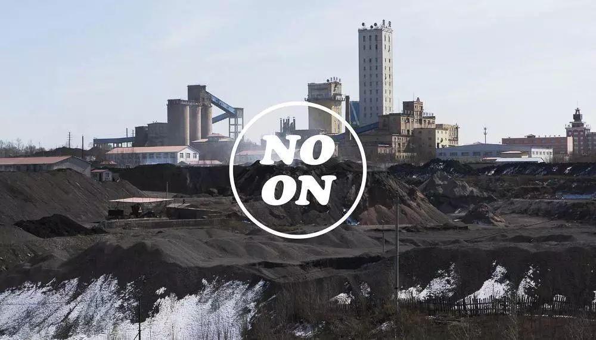
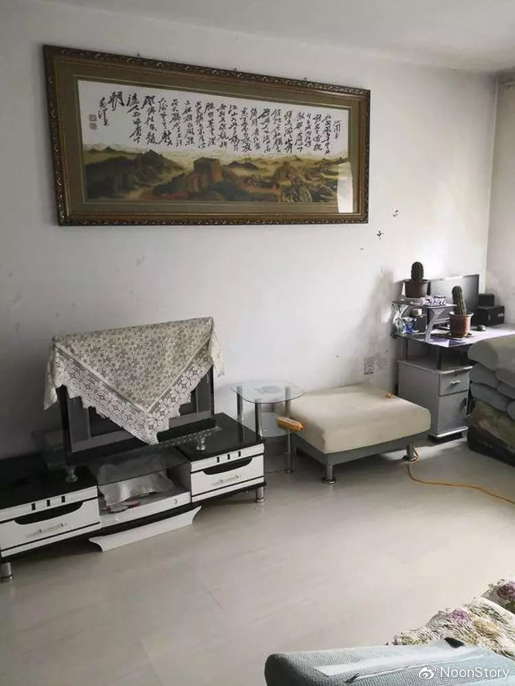
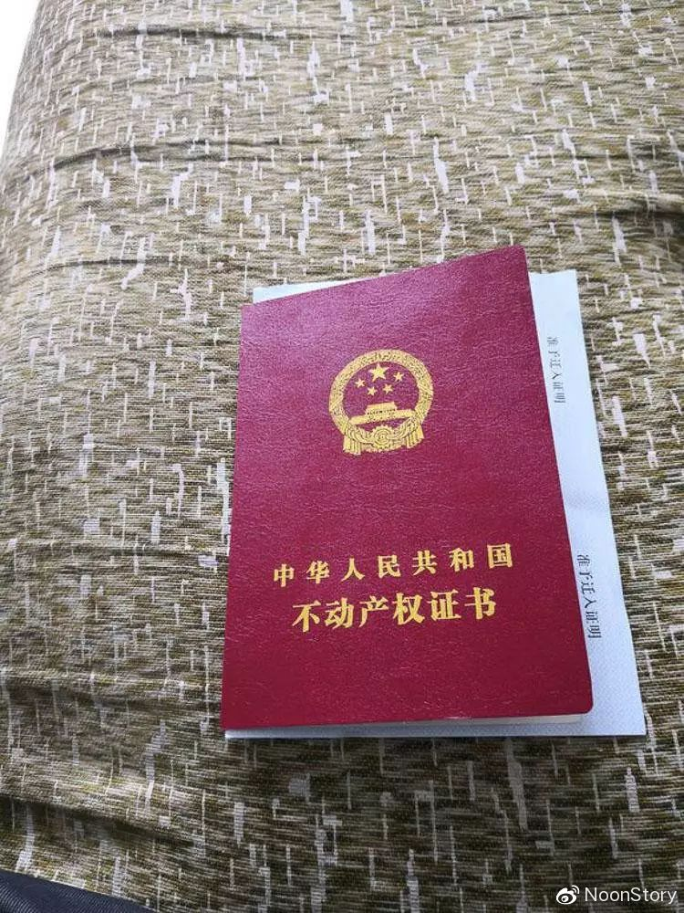
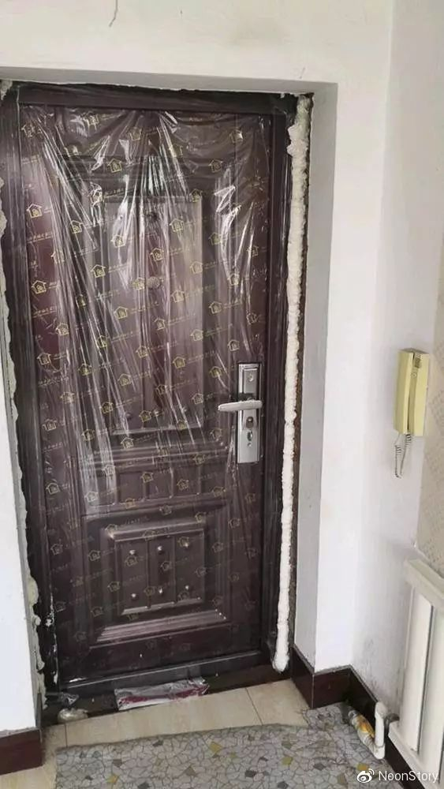
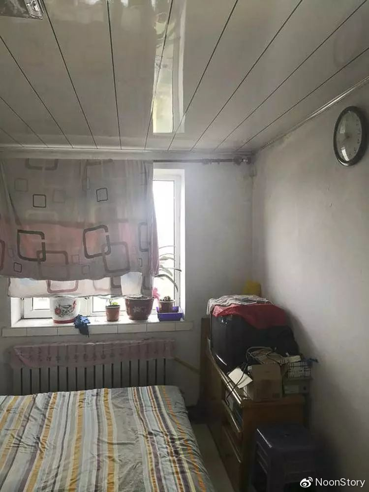
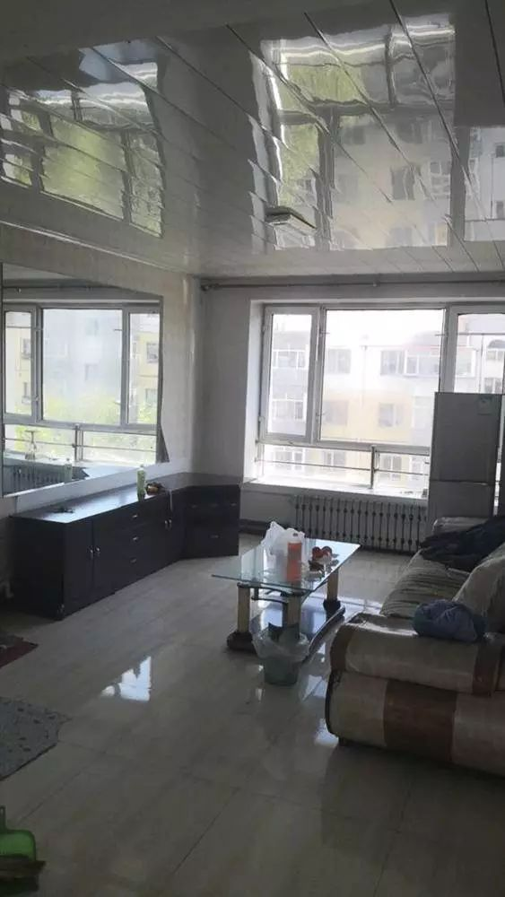
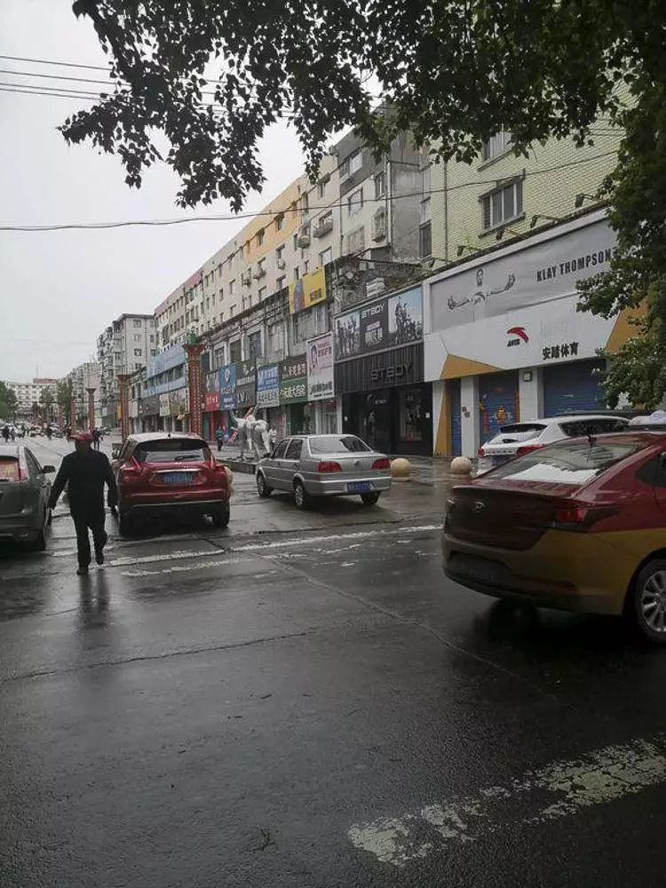
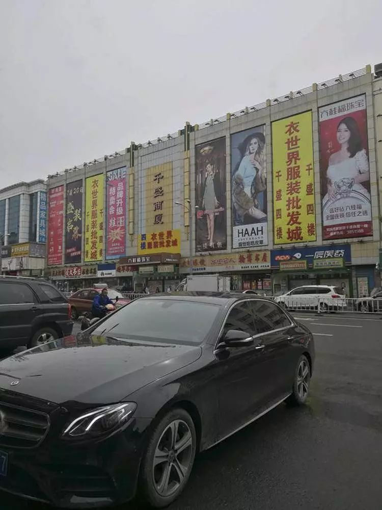
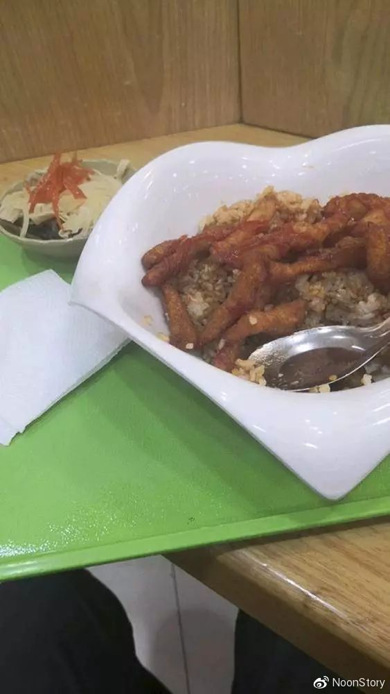

流浪到鹤岗，我五万块买了套房
口述 | 李海
采访、整理 | KUMA
百度贴吧里有个“流浪吧”，吧里大多是漂泊四方的年轻人。除了“流浪”生活，也经常有人讨论安家、买房。李海断断续续看了两年房，今年5月他打算去鹤岗买房，在贴吧发了帖子全程直播买房过程，看房的第八天，他签下了新房合同，总价五万八，两室一厅。“不管好坏，还是得买套房，”李海说，“就这几万块钱，没什么好后悔的。”
以下是李海的口述：
1
今年5月，我存了五万块钱，打算去鹤岗买套房，一开始预算买房三四万，留出一万买生活用品。
我之前还没去过鹤岗。从舟山出发，到那边没有直达的火车，只有先到宁波坐火车到天津转车到佳木斯，再到鹤岗。路程差不多一整天。
鹤岗，还有黑龙江很多地方以前都是煤城，有煤矿的时候很发达，现在资源枯竭，小煤矿都关了，只剩下一些大的，年轻人都离开这里去外地找工作了，人也就越来越少，留在这里生活的人，老人小孩占了百分之八十，整个城市人口一百万人左右。不过好歹是地级市，不像没去过的人说的像空城，只是年轻劳力确实少，满大街都在招工，像什么服务员、客服、外卖、厨师、公交车司机，一直缺人，工资很低，很少超过三千，送外卖的话，收入会相对高一点。
到了鹤岗，我先找了间太空舱旅馆住下，第二天就出去看房。先看了套64平米的，四万五。小区附近一百米不到就有小菜场，街上很干净，饭馆、理发店、药店都有，基础设施蛮完善的，就是普通小城镇的样子。这里房子特别便宜，大多是九几年棚户区改造的老小区。房子没问题，产权也很快能过户，新一些的商品房会贵点。这边的消费，在小地方里还算有点高，有固定收入维持生活没问题，房价和收入倒是很成正比。
来的第一天看上的那套房第二天就卖掉了，只好重新找。又看了几套六七十平、三四万的房子，最后定下了一套77平的房，在六层顶楼，我立刻就签了合同，加上中介费、过户费，总共五万八搞定。暖气费按年算，从十月开始供暖倒第二年五月，25块钱一平米。
从我过来看房到下定，就八天。这边房子一直在小幅度地涨，刚来时四万多的房还有很多，后面几天就很少了。卖方和中介精明得很，对本地人外地人开不一样的价。后来我才知道，我这套房子本地人差不多四万多点就能买到，我花了五万多，亏了一万多块钱呢。我这差价还不算很大的，我看房那时候看过一个小区，70多平米的毛坯房本地人能一万多买下来，卖给外地人就五六万。
新房有装修，包家具家电，离市中心十公里。就是阳台得自己装修。买好房，6月3号过户，我就直接住下了，换了扇防盗门，一千二，一年的取暖费物业费交了两千，我兜里还剩下五百，装了个宽带钱正好用完，剩下的消费暂时先用花呗。本来还拿了准迁单打算把户口也迁过来，但是老家的户口有点问题迁不了，以后再说吧，目前户口对生活也没多大影响。
住到六月中，我出发回舟山搬家，行李都打包直接寄到鹤岗新家。我老家就在舟山，父母很早就离婚了，他们不管我，我今年33岁，都二十年没回过以前的家了，买房之前我一直租房，东奔西跑特别麻烦，买下这间新房，算是有个像样的家了。





2
我是做海员的，海上半年，休息半年，到哪儿都一样，最重要是有个安定地方，离开舟山搬到鹤岗对我来说没什么。也不是不想就近安家，南方房价太贵了嘛。舟山这么小的城市，远一点的地方房价一万多一平米，市中心得两万以上。
年轻一点的时候我做过保安，还在中国海油的工厂做过三年消防兵，二十来岁体质好，消防兵每天要训练，太累了，年纪大一点就干不动了。后来我考了海员证，跟船。我跟的是南北航线的货船，装货、装煤什么的，我在船上做技工，修机器，月工资九千多。哪里有货就去装，然后再去目的地卸货，一趟船一来一回最少三天，长的一个星期左右。航线是中国沿海，没多长的，也有很多人跟渔船出海，渔船就得一直在海上待着，比货船辛苦很多。
货船分大小，小船一趟十几个人，大船二三十人。大家工资都不够用，牌都不打啦，就玩玩手机。跟船需要持证，水手工资基本上八千五左右，没证也有船让你上，但是工资低点，五千左右。我一般连续跟一趟船半年左右。船上太无聊了，在海上手机信号都没有，有时候为了找信号，晚上快十二点了，海上冻死人的温度，还蹲在外边找信号玩一下手机。
想买便宜房子，除了经济问题，租房麻烦也是原因。我每年出海干半年，再拐回来休息半年，但是家里东西得有地方放啊，就算是半年都在海上漂着，房子也得一年一年租。有一次正在海上呢，房东就让我搬走，那我怎么办？还得叫朋友来帮忙，太麻烦了。要么就是刚搬进去没多久，房东就突然不租了，我又得找房。
在舟山那边租房子，小的七八百一个月，大一点一千多，南方的房子物业费高，以前一年三四千的物业费我都交过。因为一年里只有半年固定收入，平均到每个月得打个半折，所以经济不算宽裕。休息的半年打游戏赚点小钱，比如接单做游戏代练，八小时一百块。这样过了快八年。
我一直玩贴吧，四年前进了流浪吧，里边就有很多生活状况差不多的吧友。大概是从2017年开始，我想着要买个房。贴吧里各种各样的人多了，长久生活在城市里的人可能想不到现在国内还有这么便宜的房子吧，好多人以为几万块的房肯定是荒山野岭的，其实你打开找房的APP看看，几万块在鹤岗还能买到高层电梯房，这样的小城市不止鹤岗一个，东北很多环境不错的小城市，一套房都没有大城市一平方米贵。
这几年里，休息的半年我就到处看房，贴吧里也有不少人互相交流这些信息。之前我去过甘肃玉门，那边几乎是空城，商品房整片整片废弃，没有人，什么都没有，所有的楼房都是空的，门也没关，小区门口的大铁门都不知道哪里去了。玉门一套六十多平米的房子只要两三千块钱，有的楼水电都没有，有水电供应的地方条件也不好，水质差，经常停水停电。房屋证件倒是都齐全，但是二十公里范围内连一间卖东西的小店都没有，想买菜都要跑很远，这怎么住？我那次去玉门就待了大半天，看到是这样的状况，赶紧走了。
后来，我又去云南边境和越南接壤的地方看过，那里太乱了，外地人住不下去，很容易被本地人欺负，他们都是一个宗族一个宗族在一起。听别人说湖北恩施不错，我也去了，太贵，三四千一平米，超过预算了，索性在当地玩了几天走了。
鹤岗是我同事推荐的，在船上听同事说鹤岗不错，便宜，适合居住，五月初下船安顿了几天我就马上过去了。
烦心事也有。回舟山把行李寄出去之后我又坐绿皮车回到鹤岗，开始弄新房的阳台装修，我七月份就找了工人来装修阳台，现在十月底了还没装好。北方生活节奏慢，鹤岗这样劳动力都出去了的小城市更慢了。在南方工作，每天干活都有人催的，北方呢，你就是慢吞吞干活也没人管你，很懒散。装修工人干几天人就没了，跟我说这几天天气不好啊，就几天不来，或者有些时候他们又说还有别的地方有活要干，又东做几天，西做几天。地方小，做工的人少，工人不来没人替，就拖拖拉拉到现在。阳台顶漏水，小区物业说给做防水，不用自己做，说了几个月也没影，我还是自己找人把防水做了。
这几个月我就在鹤岗躺尸。生活成本在哪里都差不多的，不管南方北方，到处都是买菜便宜买肉贵。我也不记账，有时候买菜都不问价钱的，买了房花的钱还是少了，一个月生活费一两千块钱，主要还是平时买点水果零食什么的贵一点。等到十二月份，我就出去找船，再工作半年，以后就打算夏天回鹤岗住，年底冬天出去干活。因为便宜买的顶楼房子，冬天暖气不能停，不在家的时候暖气费还得给，但是跟租房的麻烦比起来，这一千多块钱还是能接受。
我去办过户手续的时候，发现在这边买房的都是外地人，没有本地人。我问过中介，中介说鹤岗本地人一般都有个两三套房，来买房的十个人里八九个都是外地的。房子这么便宜，又没有年轻人做工，鹤岗的房租五百到八百一个月，都没人租的。中介一个月能卖十几二十套房，来买房的外地人都是从广东、湖南、湖北、四川这种离了十万八千里的地方来，很多都是不用在当地找工作的，像是设计师、游戏代练、网上兼职、开淘宝店的……住鹤岗蛮舒服的。我发帖子之后，也有几个跑船的同行想过来看看。
我去鹤岗买房时在吧里发了个直播帖，看的人不少，后来就建了微信群大家聊聊天。我还不是吧里最早去鹤岗买房的，光是我在群里遇到的就有三个，有人是去年底买的，还有人比我早几个月买的。现在流浪吧里面，还有我自己建的微信群里都有好些中介混进来，怂恿别人去鹤岗买房子，搞不好过几年还会涨点价钱。
发帖之后也有很多人问我，干嘛从浙江跑到鹤岗去买房？再富的地方也有穷人。真正搬过去之后，我感觉东北居住环境不差，冬天室外冷，但是没谁一天到晚在外边，屋里有暖气很舒服，而且空气不错。
这个贴吧里大家都没什么钱，像我和家里疏远多年，在外面漂到三十多岁，正挣钱的年纪买得了一套正正经经的房子蛮好了，地方远不远无所谓，就这几万块钱，有什么后悔的？反正我和群里同样买了房的朋友都不后悔。


3
我还没成家，也从没交过女朋友。二十几岁的时候觉得一个人生活有点寂寞，这几年都习惯了。
除了流浪吧我还加了隐居吧，那里边买了房的朋友还有买得更远的。最近在伊图里河买房的人不少，是内蒙古很偏僻的一个小镇，那边房子也便宜，两万到四万左右，就是比鹤岗冷多了，听说比漠河都冷，今年光是我听说的就有十个贴吧的朋友在那边买了房。还有去大兴安岭加格达奇那边“隐居”的，也有些人因为交通便利点、周边就业方便去了辽宁阜新，也有人给我推荐过阜新，不过那里比鹤岗房价高点，我就没去。
这些地方没什么资源，经济不发达，能出去的劳动力都出去了，就算过些年房价会上涨，人都没有，能涨到哪里去呢？出来讨生活，都要考虑以后的，想着买了房在能工作的年纪里不用再租房，也许有好出路有机会搬到别的地方，要是没有，用这几万块换以后老了有个安居的地方也好。
像我们这样生活，没有学历，赚不了很多钱，相对好一点的可能做点技术工种，或者在大城市做保安、送外卖之类。买房都是贫民户嘛，有钱的当然想在自己的城市，没钱的就想想办法，便宜房子也买得到。我们觉得自己到处漂泊的生活状态就像流浪一样，便宜的出租房居住不稳定，租金也要一直掏下去，谁不想买房呢？我在贴吧里有几个比较熟的朋友，和他们见过面，吃吃饭聊聊天。手上有钱没钱的，只要不是欠了一大笔债，都会想到买房的事，觉得能买还是买。
我们买了房还算好的，更多人都买不起啊，有的人三十多岁，一万块钱都拿不出来。吧里有的人彻底无业，没收入，还有人在三和做日结工，那边工作中介很黑，听说好多人打工被中介扣了。
如果只是想买房，中国这么大，多便宜的房子都能找到，对我们来说，几万块钱的房子不稀奇。人和人的生活不一样，有人想往一线城市挤，也有很多人觉得无所谓。选择去偏僻城市买房的人，很多都是靠网络能赚到钱，或者我们这样跑船的，觉得住哪儿都一样，降低成本最好，如果需要在当地找工作糊口，可能就困难一点。反正有手有脚饿不死自己，我还见过去深山老林里“隐居”的朋友，靠在网上卖当地的土特产赚钱。
别看这贴吧里天天插科打诨到处漂的人不少，隐居吧里很多人都有家庭的，大家都是从家乡出来之前就成了家，夫妻俩一起在外面漂，两人一起过生活当然好了，倒没听说谁在外边混着混着找到爱情结了婚的。也许我以后能在鹤岗本地找个女孩成家。
我就觉得，不管好坏，还是得买套房。人人都想有个安稳地方可以住，向往有个属于自己的家。

（文中李海为化名）
—— 完 ——
题图：2016年03月21日，黑龙江省鹤岗市，鹤岗各大隶属于龙煤集团的煤矿近期陆续补发之前拖欠矿工的工资。如今煤炭行业不景气，市场受到持续的下行压力，在去产能的大背景下，当地一些煤矿都已减产，部分私人煤矿停产。随着矿工收入减少，物价上升，当地许多矿工的基本生活面临困境。图片来自视觉中国。
全部图片由受访者提供。